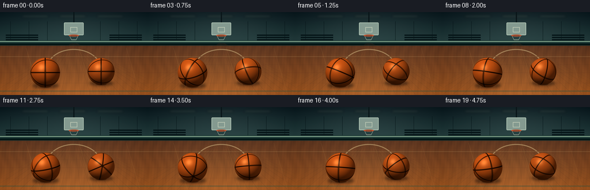
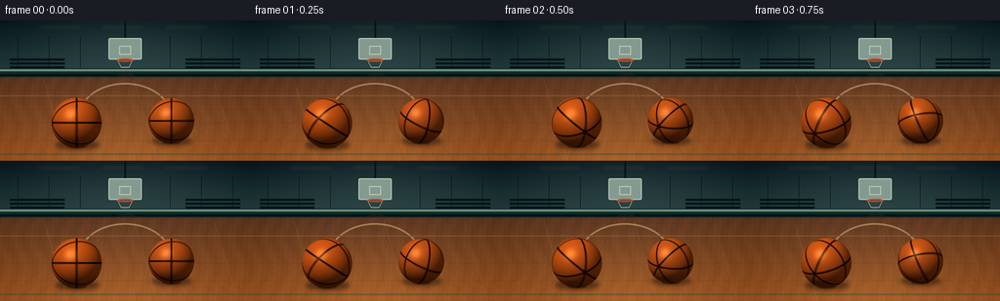
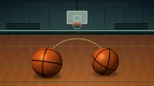

CODING AGENTS AS PIXEL WORLD MODELS
traex/GPT-5.6-Sol · instance_preservation_0026
点击播放 · 原生 RGB 像素
逐轮保存的候选
回放视频、检查图与代码变化。
每份候选均可单独播放。实际图片检查记录在下方工具轨迹中。
候选 01播放与检查图
点击播放 · 原生 RGB 像素


展开代码变化
--- 上一保存版本
+++ 本次保存版本
@@ -0,0 +1,279 @@
+from pathlib import Path
+import math
+import numpy as np
+from PIL import Image, ImageDraw, ImageFilter
+import artifact_io
+
+ROOT = Path(__file__).resolve().parent
+W, H, N, FPS = 256, 144, 20, 4.0
+SS = 4
+w, h = W * SS, H * SS
+
+
+def sc(v):
+ return int(round(v * SS))
+
+
+def draw_line(draw, pts, fill, width=1):
+ draw.line([(sc(x), sc(y)) for x, y in pts], fill=fill, width=max(1, sc(width)))
+
+
+def static_background():
+ """Detailed but quiet indoor court, rendered once at 4x resolution."""
+ yy, xx = np.mgrid[0:h, 0:w]
+ Y = yy / SS
+ X = xx / SS
+ horizon = 56.0
+
+ # Moody teal gym wall above the court.
+ wall_t = np.clip(Y / horizon, 0, 1)
+ wall_top = np.array([21., 35., 40.])
+ wall_bottom = np.array([44., 69., 70.])
+ wall = wall_top[None, None, :] * (1-wall_t[..., None]) + wall_bottom[None, None, :] * wall_t[..., None]
+ # Gentle central overhead illumination and cinematic edge vignette.
+ glow = 13 * np.exp(-((X-128)/91)**2 - ((Y-25)/33)**2)
+ wall += glow[..., None] * np.array([0.60, 0.78, 0.75])
+
+ # Warm maple floor, richer toward camera.
+ ft = np.clip((Y-horizon)/(H-horizon), 0, 1)
+ floor_near = np.array([157., 91., 42.])
+ floor_far = np.array([93., 58., 38.])
+ floor = floor_far[None, None, :] * (1-ft[..., None]) + floor_near[None, None, :] * ft[..., None]
+ # Broad reflected ceiling glow in the varnish.
+ floor += (16*np.exp(-((X-128)/74)**2) * np.clip(ft, 0, 1))[..., None] * np.array([1.0, .78, .43])
+ # Fine, deterministic wood grain.
+ grain = 3.2*np.sin(X*.37 + np.sin(Y*.10)*2.0) + 1.8*np.sin(X*1.21 + Y*.08)
+ floor += grain[..., None] * np.array([1.0, .58, .24])
+
+ rgb = np.where((Y < horizon)[..., None], wall, floor)
+ # Soft vignette.
+ vign = np.clip(((X-128)/170)**2 + ((Y-73)/125)**2, 0, 1)
+ rgb -= (vign*12)[..., None]
+ rgb = np.uint8(np.clip(rgb, 0, 255))
+ im = Image.fromarray(rgb, 'RGB').convert('RGBA')
+
+ # Architectural detail on a separate layer so distant elements can remain subtle.
+ d = ImageDraw.Draw(im, 'RGBA')
+ d.rectangle((0, sc(49), w, sc(58)), fill=(20, 45, 45, 255))
+ d.rectangle((0, sc(50), w, sc(52)), fill=(108, 140, 123, 95))
+ d.rectangle((0, sc(55), w, sc(57)), fill=(8, 22, 22, 145))
+ # Wall panels and low bleacher silhouettes.
+ for x0 in [18, 50, 82, 174, 206, 238]:
+ d.line((sc(x0), sc(16), sc(x0), sc(49)), fill=(8, 22, 25, 42), width=sc(.6))
+ for i in range(3):
+ y0 = 39 + i*4
+ d.rectangle((sc(10), sc(y0), sc(66), sc(y0+2.0)), fill=(10, 24, 27, 65))
+ d.rectangle((sc(190), sc(y0), sc(246), sc(y0+2.0)), fill=(10, 24, 27, 65))
+
+ # Soft ceiling light panels and their quiet halos.
+ light = Image.new('RGBA', (w, h), (0,0,0,0))
+ ld = ImageDraw.Draw(light, 'RGBA')
+ for x0 in [38, 103, 168]:
+ ld.rounded_rectangle((sc(x0), sc(6), sc(x0+46), sc(8.2)), radius=sc(1), fill=(216,231,212,95))
+ light = light.filter(ImageFilter.GaussianBlur(sc(2.4)))
+ im = Image.alpha_composite(im, light)
+
+ # Distant backboard and hoop: context, not a competing subject.
+ d = ImageDraw.Draw(im, 'RGBA')
+ d.line((sc(128), 0, sc(128), sc(19)), fill=(13, 25, 28, 145), width=sc(2))
+ d.rounded_rectangle((sc(111), sc(18), sc(145), sc(40)), radius=sc(1.5), fill=(130,154,146,20), outline=(181,201,187,82), width=sc(1))
+ d.rectangle((sc(122), sc(26), sc(134), sc(35)), outline=(185,197,181,58), width=sc(1))
+ d.ellipse((sc(119), sc(39), sc(137), sc(42.2)), outline=(180,80,47,150), width=sc(1.4))
+ d.line((sc(121), sc(42), sc(124), sc(48)), fill=(180,189,171,45), width=sc(.7))
+ d.line((sc(135), sc(42), sc(132), sc(48)), fill=(180,189,171,45), width=sc(.7))
+ d.line((sc(124), sc(48), sc(132), sc(48)), fill=(180,189,171,35), width=sc(.7))
+
+ # Perspective plank seams, converging toward center court.
+ floor_detail = Image.new('RGBA', (w,h), (0,0,0,0))
+ fd = ImageDraw.Draw(floor_detail, 'RGBA')
+ van_x, van_y = 128, 54
+ for xb in range(-40, 321, 18):
+ fd.line((sc(van_x + (xb-van_x)*.02), sc(van_y), sc(xb), sc(146)), fill=(67,38,25,52), width=sc(.55))
+ fd.line((sc(van_x + (xb-van_x)*.02 + .7), sc(van_y), sc(xb+.7), sc(146)), fill=(236,164,81,23), width=sc(.35))
+ # Horizontal board joints get farther apart toward the viewer.
+ for y0 in [59, 64, 71, 80, 91, 105, 123, 143]:
+ fd.line((0, sc(y0), w, sc(y0)), fill=(66,38,28,43), width=sc(.55))
+ # staggered short end-joints
+ spacing = 43 + (y0-56)*.42
+ offset = (int(y0)*17) % int(spacing)
+ for x0 in np.arange(offset, 256, spacing):
+ length = 4.0 + (y0-56)*.05
+ fd.line((sc(x0), sc(y0), sc(x0-1.3), sc(y0+length)), fill=(66,38,27,32), width=sc(.45))
+ # Lacquer glints.
+ for x0, a in [(45,22),(137,18),(219,15)]:
+ fd.line((sc(x0), sc(62), sc(x0+24), sc(143)), fill=(255,204,115,a), width=sc(.8))
+ im = Image.alpha_composite(im, floor_detail)
+
+ # Court markings behind the balls.
+ markings = Image.new('RGBA', (w,h), (0,0,0,0))
+ md = ImageDraw.Draw(markings, 'RGBA')
+ md.arc((sc(80), sc(64), sc(176), sc(135)), 184, 356, fill=(225,207,153,112), width=sc(1.7))
+ md.line((0, sc(77), w, sc(77)), fill=(217,196,139,45), width=sc(1.1))
+ # A green sideline across the front edge, partially hidden by subjects.
+ md.line((0, sc(137), w, sc(137)), fill=(28,80,70,90), width=sc(2.0))
+ return Image.alpha_composite(im, markings)
+
+
+def rotation(axis, angle):
+ axis = np.asarray(axis, dtype=np.float64)
+ axis /= np.linalg.norm(axis)
+ x,y,z = axis
+ c,s = math.cos(angle), math.sin(angle)
+ C = 1-c
+ return np.array([
+ [c+x*x*C, x*y*C-z*s, x*z*C+y*s],
+ [y*x*C+z*s, c+y*y*C, y*z*C-x*s],
+ [z*x*C-y*s, z*y*C+x*s, c+z*z*C]
+ ])
+
+
+def render_ball(cx, cy, radius, angle, axis, seed, tint=(1.0, .50, .16)):
+ """Ray-map a persistent procedural basketball texture onto a lit sphere."""
+ pad = 2.0
+ x0, y0 = sc(cx-radius-pad), sc(cy-radius-pad)
+ x1, y1 = sc(cx+radius+pad), sc(cy+radius+pad)
+ ph, pw = y1-y0, x1-x0
+ yy, xx = np.mgrid[y0:y1, x0:x1]
+ xf = xx/SS + .5/SS
+ yf = yy/SS + .5/SS
+ nx = (xf-cx)/radius
+ ny = (cy-yf)/radius
+ rr = nx*nx + ny*ny
+ inside = rr <= 1.0
+ nz = np.sqrt(np.clip(1.0-rr, 0, 1))
+ ns = np.stack([nx, ny, nz], axis=-1)
+
+ # Fixed world illumination gives volume while the material rotates beneath it.
+ light = np.array([-0.55, 0.76, 0.78]); light /= np.linalg.norm(light)
+ diffuse = np.clip(np.sum(ns*light, axis=-1), 0, 1)
+ light2 = np.array([0.65, 0.25, 0.75]); light2 /= np.linalg.norm(light2)
+ fill = np.clip(np.sum(ns*light2, axis=-1), 0, 1)
+ shade = .25 + .68*diffuse + .12*fill
+ # Slight darkening close to the floor/contact side.
+ shade *= (0.83 + 0.17*np.clip((ny+1.0)/.55, 0, 1))
+
+ # Sub-frame angular samples create restrained rotational blur but keep seams legible.
+ sample_cols = []
+ for blur_off, weight in [(-.045,.23),(0,.54),(.045,.23)]:
+ R = rotation(axis, angle+blur_off)
+ no = ns @ R # equivalent to applying inverse object orientation to row vectors
+ ox, oy, oz = no[...,0], no[...,1], no[...,2]
+
+ # Four broad great-circle grooves form recognizable basketball panels.
+ plane_normals = np.array([
+ [1.0, 0.0, 0.0],
+ [0.0, 1.0, 0.0],
+ [0.18, 0.52, 0.835],
+ [0.18, -0.52, 0.835],
+ ], dtype=float)
+ plane_normals /= np.linalg.norm(plane_normals, axis=1)[:,None]
+ vals = np.stack([np.abs(ox*p[0]+oy*p[1]+oz*p[2]) for p in plane_normals], axis=-1)
+ dist = np.min(vals, axis=-1)
+ # dark recessed center with warm raised shoulders
+ groove = np.clip((0.052-dist)/0.026, 0, 1)
+ groove = groove*groove*(3-2*groove)
+ shoulder = np.clip(1-np.abs(dist-.060)/.014, 0, 1)
+
+ # Dense 3D microtexture remains attached to the spinning surface.
+ p1 = np.sin((ox*94 + oy*131 + oz*77 + seed*3.1))
+ p2 = np.sin((ox*183 - oy*119 + oz*157 + seed*5.3))
+ p3 = np.sin((ox*251 + oy*211 - oz*137 + seed*1.7))
+ grain = (p1*p2 + .45*p3)
+ pores = (grain > 1.07).astype(float)
+ micro = .965 + .038*grain - .12*pores
+
+ base = np.array([218., 91., 24.]) * np.array(tint)
+ # tint tuple acts as gentle channel control, normalized for natural orange
+ base = np.array([220., 96., 27.]) * np.array([tint[0], tint[1]/.50, tint[2]/.16])
+ col = base[None,None,:] * (shade*micro)[...,None]
+ col *= (1 - .80*groove[...,None])
+ col += shoulder[...,None]*np.array([11.,4.,1.])
+ sample_cols.append(col*weight)
+ col = sum(sample_cols)
+
+ # Tight stationary varnish highlight and faint warm rim.
+ halfv = light + np.array([0,0,1.0]); halfv /= np.linalg.norm(halfv)
+ spec = np.power(np.clip(np.sum(ns*halfv,axis=-1),0,1), 34) * 65
+ col += spec[...,None]*np.array([1.0,.84,.58])
+ rim = np.power(np.clip(1-nz,0,1), 2.2)
+ col += rim[...,None]*np.array([11.,4.,0.])
+
+ # Smooth antialiased edge; supersampling handles final contour.
+ alpha = np.clip((1.012-rr)/.025, 0, 1) * 255
+ alpha *= inside | (rr < 1.012)
+ rgba = np.zeros((ph,pw,4),dtype=np.uint8)
+ rgba[...,:3] = np.uint8(np.clip(col,0,255))
+ rgba[...,3] = np.uint8(np.clip(alpha,0,255))
+ return Image.fromarray(rgba,'RGBA'), (x0,y0)
+
+
+def ellipse_layer(box, fill, blur=0):
+ layer = Image.new('RGBA',(w,h),(0,0,0,0))
+ d = ImageDraw.Draw(layer,'RGBA')
+ d.ellipse(tuple(sc(v) for v in box), fill=fill)
+ if blur:
+ layer = layer.filter(ImageFilter.GaussianBlur(sc(blur)))
+ return layer
+
+
+BG = static_background()
+
+
+def make_frame(i):
+ t = i / FPS
+ frame = BG.copy()
+
+ # The centers are stable (instance preservation), with only subpixel gyroscopic wobble.
+ balls = [
+ dict(cx=78.5 + .45*math.sin(t*5.2), cy=105.0 + .25*math.sin(t*8.1), r=25.7,
+ angle=9.35*t + .18*math.sin(t*2.1), axis=(.24,.86,.45), seed=1.4, tint=(1.0,.50,.16)),
+ dict(cx=175.0 + .55*math.sin(t*4.7+1.3), cy=103.0 + .22*math.sin(t*7.6+.5), r=23.4,
+ angle=-10.75*t + .14*math.sin(t*2.6), axis=(-.48,.62,.62), seed=4.8, tint=(.96,.49,.17)),
+ ]
+
+ # Warm diffuse reflections in varnish, then soft contact shadows.
+ for b in balls:
+ cx, cy, r = b['cx'], b['cy'], b['r']
+ reflection = ellipse_layer((cx-r*.68, cy+r*.69, cx+r*.68, cy+r*1.13), (202,76,19,36), blur=3.3)
+ frame = Image.alpha_composite(frame, reflection)
+ shadow = ellipse_layer((cx-r*.88, cy+r*.70, cx+r*.91, cy+r*1.05), (17,14,12,125), blur=2.3)
+ frame = Image.alpha_composite(frame, shadow)
+ # crispest darkness right at contact point
+ contact = ellipse_layer((cx-r*.38, cy+r*.86, cx+r*.38, cy+r*1.01), (16,11,8,150), blur=.65)
+ frame = Image.alpha_composite(frame, contact)
+
+ # Very subtle side sweeps indicate high angular speed without cartoon arrows.
+ sweeps = Image.new('RGBA',(w,h),(0,0,0,0))
+ sd = ImageDraw.Draw(sweeps,'RGBA')
+ for k,b in enumerate(balls):
+ cx,cy,r=b['cx'],b['cy'],b['r']
+ if k==0:
+ sd.arc((sc(cx-r-2.5),sc(cy-r-1),sc(cx+r+2.5),sc(cy+r+1)), 198, 252, fill=(239,156,72,50), width=sc(.8))
+ sd.arc((sc(cx-r-3),sc(cy-r),sc(cx+r+3),sc(cy+r)), 15, 58, fill=(239,156,72,37), width=sc(.7))
+ else:
+ sd.arc((sc(cx-r-2.5),sc(cy-r),sc(cx+r+2.5),sc(cy+r)), 112, 155, fill=(235,151,70,45), width=sc(.75))
+ sd.arc((sc(cx-r-3),sc(cy-r),sc(cx+r+3),sc(cy+r)), 290, 333, fill=(235,151,70,35), width=sc(.7))
+ sweeps = sweeps.filter(ImageFilter.GaussianBlur(sc(.28)))
+ frame = Image.alpha_composite(frame,sweeps)
+
+ for b in balls:
+ patch,pos=render_ball(b['cx'],b['cy'],b['r'],b['angle'],b['axis'],b['seed'],b['tint'])
+ frame.alpha_composite(patch,dest=pos)
+
+ # Gentle global finish: downsampled antialiasing, tiny contrast/color grade.
+ frame = frame.convert('RGB').resize((W,H),Image.Resampling.LANCZOS)
+ arr=np.asarray(frame,dtype=np.float32)
+ arr=(arr-128)*1.035+128
+ arr[...,0]*=1.015
+ arr[...,2]*=.985
+ return np.uint8(np.clip(arr,0,255))
+
+
+def main():
+ frames=np.stack([make_frame(i) for i in range(N)],axis=0)
+ artifact_io.save(frames,ROOT)
+ print('saved',frames.shape,frames.dtype,'to',ROOT)
+
+
+if __name__=='__main__':
+ main()
可观测工具轨迹
实际执行的命令与返回图片。
命令 1exit 0
/bin/bash -lc "cat prompt.txt && printf '\\n--- GENERATION_RULES.md ---\\n' && cat GENERATION_RULES.md"
命令 2exit 0
/bin/bash -lc "cat task_spec.json && printf '\\n--- files ---\\n' && find . -maxdepth 2 -type f -printf '%p\\n' | sort"
命令 3exit 0
/bin/bash -lc "sed -n '1,260p' artifact_io.py"
命令 4exit 0
/bin/bash -lc "which ffmpeg || true; python - <<'PY'
import PIL,numpy
print('PIL',PIL.__version__,'numpy',numpy.__version__)
PY"命令 5exit 0
/bin/bash -lc "cat > generate.py <<'PY'
from pathlib import Path
import math
import numpy as np
from PIL import Image, ImageDraw, ImageFilter
import artifact_io
ROOT = Path(__file__).resolve().parent
W, H, N, FPS = 256, 144, 20, 4.0
SS = 4
w, h = W * SS, H * SS
def sc(v):
return int(round(v * SS))
def draw_line(draw, pts, fill, width=1):
draw.line([(sc(x), sc(y)) for x, y in pts], fill=fill, width=max(1, sc(width)))
def static_background():
\"\"\"Detailed but quiet indoor court, rendered once at 4x resolution.\"\"\"
yy, xx = np.mgrid[0:h, 0:w]
Y = yy / SS
X = xx / SS
horizon = 56.0
# Moody teal gym wall above the court.
wall_t = np.clip(Y / horizon, 0, 1)
wall_top = np.array([21., 35., 40.])
wall_bottom = np.array([44., 69., 70.])
wall = wall_top[None, None, :] * (1-wall_t[..., None]) + wall_bottom[None, None, :] * wall_t[..., None]
# Gentle central overhead illumination and cinematic edge vignette.
glow = 13 * np.exp(-((X-128)/91)**2 - ((Y-25)/33)**2)
wall += glow[..., None] * np.array([0.60, 0.78, 0.75])
# Warm maple floor, richer toward camera.
ft = np.clip((Y-horizon)/(H-horizon), 0, 1)
floor_near = np.array([157., 91., 42.])
floor_far = np.array([93., 58., 38.])
floor = floor_far[None, None, :] * (1-ft[..., None]) + floor_near[None, None, :] * ft[..., None]
# Broad reflected ceiling glow in the varnish.
floor += (16*np.exp(-((X-128)/74)**2) * np.clip(ft, 0, 1))[..., None] * np.array([1.0, .78, .43])
# Fine, deterministic wood grain.
grain = 3.2*np.sin(X*.37 + np.sin(Y*.10)*2.0) + 1.8*np.sin(X*1.21 + Y*.08)
floor += grain[..., None] * np.array([1.0, .58, .24])
rgb = np.where((Y < horizon)[..., None], wall, floor)
# Soft vignette.
vign = np.clip(((X-128)/170)**2 + ((Y-73)/125)**2, 0, 1)
rgb -= (vign*12)[..., None]
rgb = np.uint8(np.clip(rgb, 0, 255))
im = Image.fromarray(rgb, 'RGB').convert('RGBA')
# Architectural detail on a separate layer so distant elements can remain subtle.
d = ImageDraw.Draw(im, 'RGBA')
d.rectangle((0, sc(49), w, sc(58)), fill=(20, 45, 45, 255))
d.rectangle((0, sc(50), w, sc(52)), fill=(108, 140, 123, 95))
d.rectangle((0, sc(55), w, sc(57)), fill=(8, 22, 22, 145))
# Wall panels and low bleacher silhouettes.
for x0 in [18, 50, 82, 174, 206, 238]:
d.line((sc(x0), sc(16), sc(x0), sc(49)), fill=(8, 22, 25, 42), width=sc(.6))
for i in range(3):
y0 = 39 + i*4
d.rectangle((sc(10), sc(y0), sc(66), sc(y0+2.0)), fill=(10, 24, 27, 65))
d.rectangle((sc(190), sc(y0), sc(246), sc(y0+2.0)), fill=(10, 24, 27, 65))
# Soft ceiling light panels and their quiet halos.
light = Image.new('RGBA', (w, h), (0,0,0,0))
ld = ImageDraw.Draw(light, 'RGBA')
for x0 in [38, 103, 168]:
ld.rounded_rectangle((sc(x0), sc(6), sc(x0+46), sc(8.2)), radius=sc(1), fill=(216,231,212,95))
light = light.filter(ImageFilter.GaussianBlur(sc(2.4)))
im = Image.alpha_composite(im, light)
# Distant backboard and hoop: context, not a competing subject.
d = ImageDraw.Draw(im, 'RGBA')
d.line((sc(128), 0, sc(128), sc(19)), fill=(13, 25, 28, 145), width=sc(2))
d.rounded_rectangle((sc(111), sc(18), sc(145), sc(40)), radius=sc(1.5), fill=(130,154,146,20), outline=(181,201,187,82), width=sc(1))
d.rectangle((sc(122), sc(26), sc(134), sc(35)), outline=(185,197,181,58), width=sc(1))
d.ellipse((sc(119), sc(39), sc(137), sc(42.2)), outline=(180,80,47,150), width=sc(1.4))
d.line((sc(121), sc(42), sc(124), sc(48)), fill=(180,189,171,45), width=sc(.7))
d.line((sc(135), sc(42), sc(132), sc(48)), fill=(180,189,171,45), width=sc(.7))
d.line((sc(124), sc(48), sc(132), sc(48)), fill=(180,189,171,35), width=sc(.7))
# Perspective plank seams, converging toward center court.
floor_detail = Image.new('RGBA', (w,h), (0,0,0,0))
fd = ImageDraw.Draw(floor_detail, 'RGBA')
van_x, van_y = 128, 54
for xb in range(-40, 321, 18):
fd.line((sc(van_x + (xb-van_x)*.02), sc(van_y), sc(xb), sc(146)), fill=(67,38,25,52), width=sc(.55))
fd.line((sc(van_x + (xb-van_x)*.02 + .7), sc(van_y), sc(xb+.7), sc(146)), fill=(236,164,81,23), width=sc(.35))
# Horizontal board joints get farther apart toward the viewer.
for y0 in [59, 64, 71, 80, 91, 105, 123, 143]:
fd.line((0, sc(y0), w, sc(y0)), fill=(66,38,28,43), width=sc(.55))
# staggered short end-joints
spacing = 43 + (y0-56)*.42
offset = (int(y0)*17) % int(spacing)
for x0 in np.arange(offset, 256, spacing):
length = 4.0 + (y0-56)*.05
fd.line((sc(x0), sc(y0), sc(x0-1.3), sc(y0+length)), fill=(66,38,27,32), width=sc(.45))
# Lacquer glints.
for x0, a in [(45,22),(137,18),(219,15)]:
fd.line((sc(x0), sc(62), sc(x0+24), sc(143)), fill=(255,204,115,a), width=sc(.8))
im = Image.alpha_composite(im, floor_detail)
# Court markings behind the balls.
markings = Image.new('RGBA', (w,h), (0,0,0,0))
md = ImageDraw.Draw(markings, 'RGBA')
md.arc((sc(80), sc(64), sc(176), sc(135)), 184, 356, fill=(225,207,153,112), width=sc(1.7))
md.line((0, sc(77), w, sc(77)), fill=(217,196,139,45), width=sc(1.1))
# A green sideline across the front edge, partially hidden by subjects.
md.line((0, sc(137), w, sc(137)), fill=(28,80,70,90), width=sc(2.0))
return Image.alpha_composite(im, markings)
def rotation(axis, angle):
axis = np.asarray(axis, dtype=np.float64)
axis /= np.linalg.norm(axis)
x,y,z = axis
c,s = math.cos(angle), math.sin(angle)
C = 1-c
return np.array([
[c+x*x*C, x*y*C-z*s, x*z*C+y*s],
[y*x*C+z*s, c+y*y*C, y*z*C-x*s],
[z*x*C-y*s, z*y*C+x*s, c+z*z*C]
])
def render_ball(cx, cy, radius, angle, axis, seed, tint=(1.0, .50, .16)):
\"\"\"Ray-map a persistent procedural basketball texture onto a lit sphere.\"\"\"
pad = 2.0
x0, y0 = sc(cx-radius-pad), sc(cy-radius-pad)
x1, y1 = sc(cx+radius+pad), sc(cy+radius+pad)
ph, pw = y1-y0, x1-x0
yy, xx = np.mgrid[y0:y1, x0:x1]
xf = xx/SS + .5/SS
yf = yy/SS + .5/SS
nx = (xf-cx)/radius
ny = (cy-yf)/radius
rr = nx*nx + ny*ny
inside = rr <= 1.0
nz = np.sqrt(np.clip(1.0-rr, 0, 1))
ns = np.stack([nx, ny, nz], axis=-1)
# Fixed world illumination gives volume while the material rotates beneath it.
light = np.array([-0.55, 0.76, 0.78]); light /= np.linalg.norm(light)
diffuse = np.clip(np.sum(ns*light, axis=-1), 0, 1)
light2 = np.array([0.65, 0.25, 0.75]); light2 /= np.linalg.norm(light2)
fill = np.clip(np.sum(ns*light2, axis=-1), 0, 1)
shade = .25 + .68*diffuse + .12*fill
# Slight darkening close to the floor/contact side.
shade *= (0.83 + 0.17*np.clip((ny+1.0)/.55, 0, 1))
# Sub-frame angular samples create restrained rotational blur but keep seams legible.
sample_cols = []
for blur_off, weight in [(-.045,.23),(0,.54),(.045,.23)]:
R = rotation(axis, angle+blur_off)
no = ns @ R # equivalent to applying inverse object orientation to row vectors
ox, oy, oz = no[...,0], no[...,1], no[...,2]
# Four broad great-circle grooves form recognizable basketball panels.
plane_normals = np.array([
[1.0, 0.0, 0.0],
[0.0, 1.0, 0.0],
[0.18, 0.52, 0.835],
[0.18, -0.52, 0.835],
], dtype=float)
plane_normals /= np.linalg.norm(plane_normals, axis=1)[:,None]
vals = np.stack([np.abs(ox*p[0]+oy*p[1]+oz*p[2]) for p in plane_normals], axis=-1)
dist = np.min(vals, axis=-1)
# dark recessed center with warm raised shoulders
groove = np.clip((0.052-dist)/0.026, 0, 1)
groove = groove*groove*(3-2*groove)
shoulder = np.clip(1-np.abs(dist-.060)/.014, 0, 1)
# Dense 3D microtexture remains attached to the spinning surface.
p1 = np.sin((ox*94 + oy*131 + oz*77 + seed*3.1))
p2 = np.sin((ox*183 - oy*119 + oz*157 + seed*5.3))
p3 = np.sin((ox*251 + oy*211 - oz*137 + seed*1.7))
grain = (p1*p2 + .45*p3)
pores = (grain > 1.07).astype(float)
micro = .965 + .038*grain - .12*pores
base = np.array([218., 91., 24.]) * np.array(tint)
# tint tuple acts as gentle channel control, normalized for natural orange
base = np.array([220., 96., 27.]) * np.array([tint[0], tint[1]/.50, tint[2]/.16])
col = base[None,None,:] * (shade*micro)[...,None]
col *= (1 - .80*groove[...,None])
col += shoulder[...,None]*np.array([11.,4.,1.])
sample_cols.append(col*weight)
col = sum(sample_cols)
# Tight stationary varnish highlight and faint warm rim.
halfv = light + np.array([0,0,1.0]); halfv /= np.linalg.norm(halfv)
spec = np.power(np.clip(np.sum(ns*halfv,axis=-1),0,1), 34) * 65
col += spec[...,None]*np.array([1.0,.84,.58])
rim = np.power(np.clip(1-nz,0,1), 2.2)
col += rim[...,None]*np.array([11.,4.,0.])
# Smooth antialiased edge; supersampling handles final contour.
alpha = np.clip((1.012-rr)/.025, 0, 1) * 255
alpha *= inside | (rr < 1.012)
rgba = np.zeros((ph,pw,4),dtype=np.uint8)
rgba[...,:3] = np.uint8(np.clip(col,0,255))
rgba[...,3] = np.uint8(np.clip(alpha,0,255))
return Image.fromarray(rgba,'RGBA'), (x0,y0)
def ellipse_layer(box, fill, blur=0):
layer = Image.new('RGBA',(w,h),(0,0,0,0))
d = ImageDraw.Draw(layer,'RGBA')
d.ellipse(tuple(sc(v) for v in box), fill=fill)
if blur:
layer = layer.filter(ImageFilter.GaussianBlur(sc(blur)))
return layer
BG = static_background()
def make_frame(i):
t = i / FPS
frame = BG.copy()
# The centers are stable (instance preservation), with only subpixel gyroscopic wobble.
balls = [
dict(cx=78.5 + .45*math.sin(t*5.2), cy=105.0 + .25*math.sin(t*8.1), r=25.7,
angle=9.35*t + .18*math.sin(t*2.1), axis=(.24,.86,.45), seed=1.4, tint=(1.0,.50,.16)),
dict(cx=175.0 + .55*math.sin(t*4.7+1.3), cy=103.0 + .22*math.sin(t*7.6+.5), r=23.4,
angle=-10.75*t + .14*math.sin(t*2.6), axis=(-.48,.62,.62), seed=4.8, tint=(.96,.49,.17)),
]
# Warm diffuse reflections in varnish, then soft contact shadows.
for b in balls:
cx, cy, r = b['cx'], b['cy'], b['r']
reflection = ellipse_layer((cx-r*.68, cy+r*.69, cx+r*.68, cy+r*1.13), (202,76,19,36), blur=3.3)
frame = Image.alpha_composite(frame, reflection)
shadow = ellipse_layer((cx-r*.88, cy+r*.70, cx+r*.91, cy+r*1.05), (17,14,12,125), blur=2.3)
frame = Image.alpha_composite(frame, shadow)
# crispest darkness right at contact point
contact = ellipse_layer((cx-r*.38, cy+r*.86, cx+r*.38, cy+r*1.01), (16,11,8,150), blur=.65)
frame = Image.alpha_composite(frame, contact)
# Very subtle side sweeps indicate high angular speed without cartoon arrows.
sweeps = Image.new('RGBA',(w,h),(0,0,0,0))
sd = ImageDraw.Draw(sweeps,'RGBA')
for k,b in enumerate(balls):
cx,cy,r=b['cx'],b['cy'],b['r']
if k==0:
sd.arc((sc(cx-r-2.5),sc(cy-r-1),sc(cx+r+2.5),sc(cy+r+1)), 198, 252, fill=(239,156,72,50), width=sc(.8))
sd.arc((sc(cx-r-3),sc(cy-r),sc(cx+r+3),sc(cy+r)), 15, 58, fill=(239,156,72,37), width=sc(.7))
else:
sd.arc((sc(cx-r-2.5),sc(cy-r),sc(cx+r+2.5),sc(cy+r)), 112, 155, fill=(235,151,70,45), width=sc(.75))
sd.arc((sc(cx-r-3),sc(cy-r),sc(cx+r+3),sc(cy+r)), 290, 333, fill=(235,151,70,35), width=sc(.7))
sweeps = sweeps.filter(ImageFilter.GaussianBlur(sc(.28)))
frame = Image.alpha_composite(frame,sweeps)
for b in balls:
patch,pos=render_ball(b['cx'],b['cy'],b['r'],b['angle'],b['axis'],b['seed'],b['tint'])
frame.alpha_composite(patch,dest=pos)
# Gentle global finish: downsampled antialiasing, tiny contrast/color grade.
frame = frame.convert('RGB').resize((W,H),Image.Resampling.LANCZOS)
arr=np.asarray(frame,dtype=np.float32)
arr=(arr-128)*1.035+128
arr[...,0]*=1.015
arr[...,2]*=.985
return np.uint8(np.clip(arr,0,255))
def main():
frames=np.stack([make_frame(i) for i in range(N)],axis=0)
artifact_io.save(frames,ROOT)
print('saved',frames.shape,frames.dtype,'to',ROOT)
if __name__=='__main__':
main()
PY
python generate.py
ls -lh pixels.npz inspection.png transition_check.png index.html frames/00.png frames/19.png"命令 6exit 0
/bin/bash -lc "python - <<'PY'
import json, numpy as np
from PIL import Image
from pathlib import Path
p=Path('.')
spec=json.loads(Path('task_spec.json').read_text())
z=np.load('pixels.npz')['pixels']
print('pixels',z.shape,z.dtype,'expected',(spec['height'],spec['width'],spec['frames']))
ims=[np.asarray(Image.open(f'frames/{i:02d}.png').convert('RGB')) for i in range(20)]
a=np.stack(ims)
print('frames',a.shape,a.dtype,'range',a.min(),a.max())
print('mean consecutive abs delta',np.abs(a[1:].astype(int)-a[:-1].astype(int)).mean(axis=(1,2,3)).round(3).tolist())
print('all RGB:',all(Image.open(f'frames/{i:02d}.png').mode=='RGB' for i in range(20)))
print('html',Path('index.html').stat().st_size,'npz',Path('pixels.npz').stat().st_size)
PY"视觉工具实际返回图片 1

视觉工具实际返回图片 2

视觉工具实际返回图片 3

保存候选 1 份；完成命令 6 次；可验证图片返回 3 张。原始 API 响应与完整日志保留在本地。